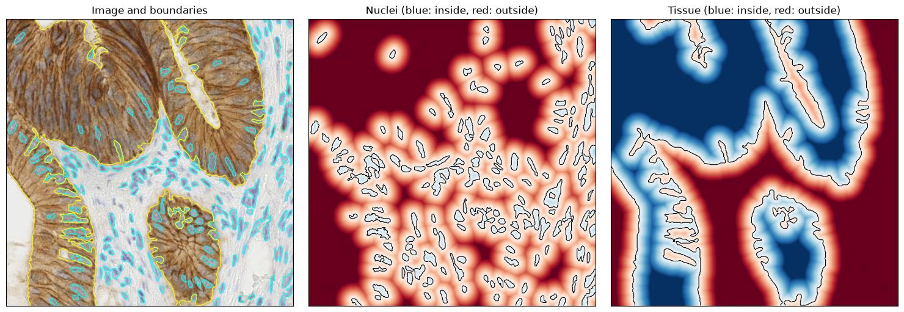
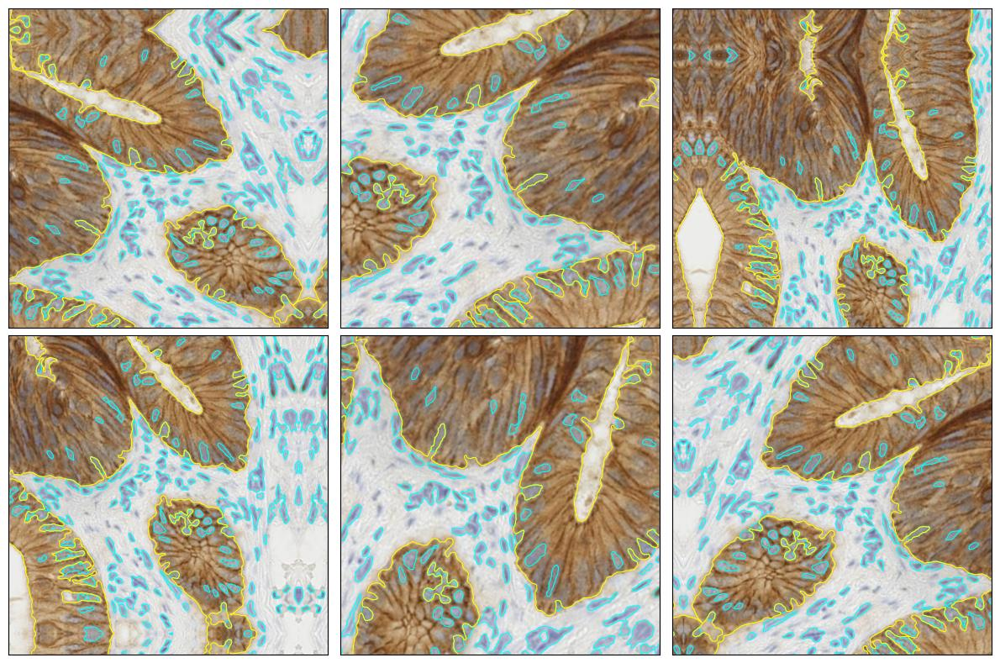
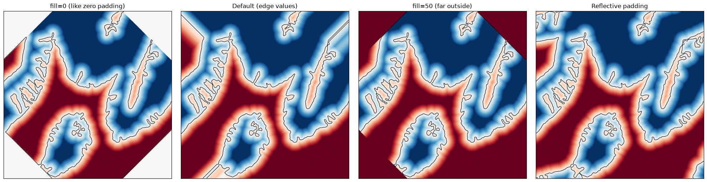

Distance maps¶
Signed distance fields (SDFs) store the distance to the nearest object boundary: negative inside, positive outside. SOLT augments them as the data type 'D'. Unlike masks, they use bilinear interpolation, their values follow the changes of scale, and zero padding does not create false boundaries.
[1]:
%matplotlib inline
# JPEG keeps the notebook small, since the figures are photos
%config InlineBackend.figure_formats = ['jpeg']
import random
import matplotlib.pyplot as plt
import numpy as np
from scipy import ndimage as ndi
from skimage import color, data, filters, morphology
import solt
import solt.transforms as slt
import solt.utils as slu
# SOLT samples the transforms with the `random` module
random.seed(42)
np.random.seed(42)
Data¶
Two labels of a scikit-image histology image, nuclei and stained tissue, converted into a float16 map HxWx2 with solt.utils.mask_to_sdf.
[2]:
img = data.immunohistochemistry()
hed = color.rgb2hed(img)
# Nuclei are stained by hematoxylin, the rest of the cells by DAB (brown)
hema = filters.gaussian(hed[..., 0], sigma=1)
dab = filters.gaussian(hed[..., 2], sigma=2)
nuclei = (hema > 1.15 * filters.threshold_otsu(hema)) & (dab < filters.threshold_otsu(dab))
nuclei = morphology.remove_small_holes(morphology.remove_small_objects(nuclei, max_size=60), max_size=60)
tissue = dab > filters.threshold_otsu(dab)
tissue = morphology.remove_small_holes(morphology.remove_small_objects(tissue, max_size=500), max_size=500)
label_names = ['Nuclei', 'Tissue']
masks = np.stack([nuclei, tissue], axis=-1).astype(np.uint8)
dmap = slu.mask_to_sdf(masks, dtype=np.float16)
print(f'Image: {img.shape} {img.dtype}, distance map: {dmap.shape} {dmap.dtype}')
Image: (512, 512, 3) uint8, distance map: (512, 512, 2) float16
[3]:
def show_dmap(ax, dmap, title=None, limit=30):
"""Shows a single-channel distance map (clipped to +-limit) and its zero level, i.e. the object boundaries."""
dmap = dmap.astype(np.float32)
ax.imshow(dmap, cmap='RdBu_r', vmin=-limit, vmax=limit)
ax.contour(dmap, levels=[0], colors='k', linewidths=0.8)
ax.set_xticks([])
ax.set_yticks([])
if title is not None:
ax.set_title(title)
def show_boundaries(ax, img, dmap):
"""Shows an image together with the zero level of every channel of a distance map."""
ax.imshow(img)
for c, colour in zip(range(dmap.shape[2]), ['cyan', 'yellow']):
ax.contour(dmap[..., c].astype(np.float32), levels=[0], colors=colour, linewidths=0.8)
ax.set_xticks([])
ax.set_yticks([])
fig, ax = plt.subplots(1, 3, figsize=(15, 5))
show_boundaries(ax[0], img, dmap)
ax[0].set_title('Image and boundaries')
for c, name in enumerate(label_names):
show_dmap(ax[c + 1], dmap[..., c], f'{name} (blue: inside, red: outside)')
plt.tight_layout()
plt.show()

Augmentation¶
The dict API uses the key distance_map. The default settings:
[4]:
dc = solt.DataContainer((img, dmap), 'ID')
dc.transform_settings[1]
[4]:
{'interpolation': ('bilinear', 'strict'),
'padding': ('z', 'inherit'),
'fill': None}
[5]:
# Reflective padding keeps the image and the map consistent
stream = solt.Stream([
slt.Rotate(angle_range=(-45, 45), p=1, padding='r'),
slt.Scale(range_x=(0.7, 1.4), p=1, padding='r'),
slt.Flip(p=0.5),
slt.Crop(384, crop_mode='r'),
])
fig, axes = plt.subplots(2, 3, figsize=(12, 8))
for ax in axes.ravel():
img_res, dmap_res = stream({'image': img, 'distance_map': dmap}, return_torch=False).data
show_boundaries(ax, img_res, dmap_res)
plt.tight_layout()
plt.show()

Accuracy¶
The augmented maps vs. the SDFs recomputed from the augmented masks, within 20 px of the boundaries:
[6]:
transforms = {
'Rotate 30°': slt.Rotate(angle_range=(30, 30), p=1),
'Scale 0.6': slt.Scale(range_x=(0.6, 0.6), p=1),
'Scale 1.7': slt.Scale(range_x=(1.7, 1.7), p=1),
'Resize 0.5': slt.Resize(resize_to=(256, 256)),
'Shear 0.3': slt.Shear(range_x=(0.3, 0.3), range_y=(0, 0), p=1),
'Projection': slt.Projection(v_range=(5e-4, 5e-4), p=1),
}
print(f"{'Transform':12s} {'Scale':>6s} {'Error, px':>10s} {'Without rescaling, px':>22s}")
for name, trf in transforms.items():
masks_res, dmap_res = trf(solt.DataContainer((masks, dmap), 'MD')).data
dmap_res = dmap_res.astype(np.float32)
# The factor, by which the values were rescaled
scale = trf.distance_scale() if hasattr(trf, 'distance_scale') else masks_res.shape[0] / masks.shape[0]
# Pixels, which come from the original image (not from the padding)
inside = trf(solt.DataContainer((np.ones(masks.shape[:2], np.uint8),), 'M')).data[0] > 0
distance_to_padding = ndi.distance_transform_edt(inside)
errors, errors_unscaled = [], []
for c in range(masks.shape[2]):
reference = slu.mask_to_sdf(masks_res[..., c], dtype=np.float64)
valid = (distance_to_padding > np.abs(reference) + 2) & (np.abs(reference) < 20)
errors.append(np.abs(dmap_res[..., c] - reference)[valid])
errors_unscaled.append(np.abs(dmap_res[..., c] / scale - reference)[valid])
print(f'{name:12s} {scale:6.2f} {np.concatenate(errors).mean():10.2f} {np.concatenate(errors_unscaled).mean():22.2f}')
Transform Scale Error, px Without rescaling, px
Rotate 30° 1.00 0.24 0.24
Scale 0.6 0.60 0.25 4.52
Scale 1.7 1.70 0.48 3.23
Resize 0.5 0.50 0.35 6.71
Shear 0.3 1.00 0.82 0.82
Projection 1.00 0.81 0.81
The rescaling keeps the error at the pixel level. Shear and projection are approximate.
Padding¶
By default, distance maps are padded with their edge values. Set fill for a constant, or use the reflective padding as for images.
[7]:
rotate = slt.Rotate(angle_range=(45, 45), p=1)
tissue_dmap = dmap[..., 1]
settings = {
'fill=0 (like zero padding)': {0: {'fill': 0}},
'Default (edge values)': None,
'fill=50 (far outside)': {0: {'fill': 50}},
'Reflective padding': {0: {'padding': 'r'}},
}
fig, axes = plt.subplots(1, 4, figsize=(20, 5))
for ax, (title, item_settings) in zip(axes, settings.items()):
res = rotate(solt.DataContainer((tissue_dmap,), 'D', item_settings)).data[0]
show_dmap(ax, res, title)
plt.tight_layout()
plt.show()

PyTorch¶
[8]:
res = stream({'image': img, 'distance_map': dmap}, normalize=False)
{key: (tuple(value.shape), value.dtype) for key, value in res.items()}
[8]:
{'image': ((3, 384, 384), torch.float32),
'distance_map': ((2, 384, 384), torch.float32)}